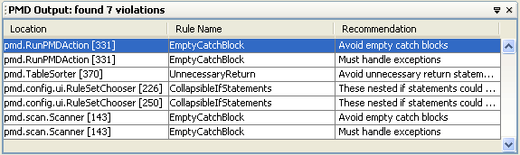
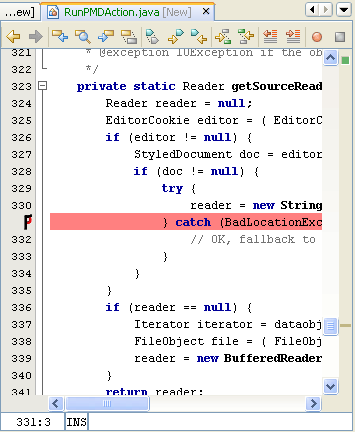
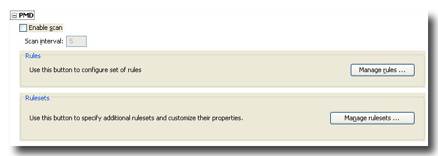

PMD for NetBeans
This is the integration of PMD into Netbeans.
Read more about PMD:
Usage
Using PMD is quite simple, follow the steps:
- Right click on one or more folders or Java files
- Choose Tools|PMD, and watch the tool
finding your flaws.
The tool is also located under the global menu Tools|Run PMD
- Open the output window PMD Output
- Double click on the error messages in the output pane to go to the line in the
Java source file to correct the problem PMD discovered.
The following screen shot shows a typical PMD Output window:

The following screen shot shows an annotation ( )
created due to a problem detected by PMD:
)
created due to a problem detected by PMD:

Options
PMD allows you to set several options.
You can open the PMD's options dialog by navigating to :
- Goto Tools|Options
- Navigate to Miscellaneous section and expand PMD node

Real time Scanning
- Click on Enable scan
- Enter the number of seconds between each scan in the text field labeled as Scan interval
Note: NetBeans requires a restart to disable scanning.
Rules
- Click on Manage rules ...
- Select the different rules to see information and examples of the rule
- Use the <, <<, >, >> buttons to choose which rules to use.
- Press OK to save the configuration
Rule sets
- Click on Manage rulesets ...
- Click Add RuleSet to locate the rule set xml file you want to include
- Click Add Rule jar to locate the jar containing the rules
- Check Include PMD standard rules to include the rules from the Pmd distribution
- Press OK to save the configuration
- Go to Rules to select the new rules.